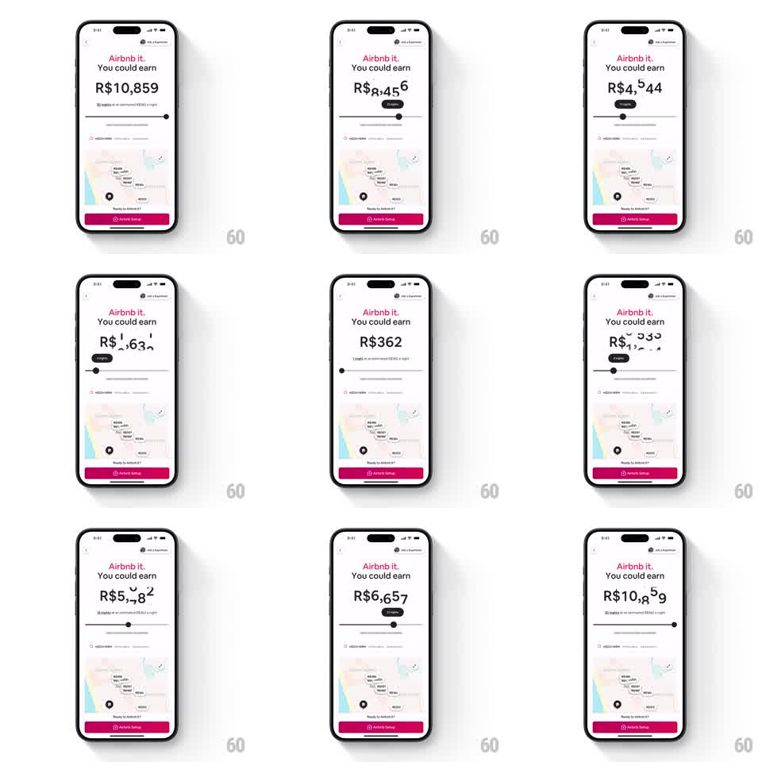

Media
Frame-by-frame

Rebuild this interaction 1:1: Airbnb's "Airbnb it" earnings slider - dragging the nights slider makes the big estimated-earnings numeral roll and blur vertically through values.

Rebuild this interaction 1:1: Airbnb's "Airbnb it" earnings slider - dragging the nights slider makes the big estimated-earnings numeral roll and blur vertically through values.
## Integration
Integration: stack-agnostic spec - springs given as stiffness/damping, timed motions as duration + curve; map every value to your framework and animation library of choice.
## Scene
White setup screen: "Airbnb it." wordmark, "You could earn", then a huge earnings figure (R$10,859). Beneath it a slider with a floating nights bubble ("30 nights"), a map preview of the area, and a magenta "Airbnb Setup" button pinned at the bottom.
## Motion spec
Pattern: scrub-linked odometer currency roll.
- Drag the slider thumb (1:1 tracking): the nights bubble follows the thumb, its value ticking as stops pass; the earnings numeral rolls - each changing digit spins vertically like a slot reel with strong motion blur proportional to drag velocity, digits cascading right to left with 25ms stagger.
- Fast drags smear the numeral into a blur column; slowing resolves the digits crisply.
- Release: the thumb springs to the nearest night (spring ~400/26) and the numeral's digits settle with a final soft flip (120ms each).
- The map pins beneath pulse subtly when the estimate changes bracket (radius +8%, 300ms).
- The magenta CTA stays fixed; only the numeral, bubble, and thumb move.
## Calibration
- Blur scales with velocity: at rest there is zero blur; mid-fling the digits are unreadable streaks - that legibility contrast is the delight.
- The estimate maps linearly to nights; never let the numeral and bubble disagree.
## Reduced motion
Numeral crossfades between values; no blur.
## Don't miss
- Currency formatting (R$ prefix, thousands separators) stays stable while digits roll - separators don't participate in the roll.
- The nights bubble rides above the thumb and never detaches.